xx0-ε的x的值，均有
xx0-ε的x的值，均有你希望自己成为一名彪炳史册的数学家，这真有点异想天开．而且，如果你的职业生涯中有12年的时间并不是讲授数学，而是在中学教授书法，甚至体育等课程，又想成为一名大数学家，那更是想入非非．不过，这就是卡尔·魏尔斯特拉斯的一部分人生，甚至他本人，对那一段人生的回忆也是充满“无尽的沉闷与厌倦”．对于任意一个ε，总存在一个δ！
1815年10月31日，卡尔·魏尔斯特拉斯出生于西威斯特法伦地区的奥斯登费尔德，现属德国，他出生时是惠灵顿在滑铁卢战役中击败拿破仑之后的四个半月．魏尔斯特拉斯的长辈中没有谁有科学文化成就，更不用说数学领域了，魏尔斯特拉斯是威廉和泰奥多拉的长子．我们对他母亲家族的情况知之甚少，唯一知道的是，与魏尔斯特拉斯的家庭一样，信奉天主教．父亲威廉·魏尔斯特拉斯受过良好的艺术和科学教育．在威斯特法伦做过小官，之后进入普鲁士政府机构工作．卡尔8岁时，他父亲进入税务系统后开始频繁搬家，这样不稳定的家庭生活在他母亲去世后变得更加糟糕，他母亲在生下两个女儿和一个儿子之后，于1827年离世．他父亲在其母去世两年后再婚，给年幼的卡尔增加了悲伤．
1828年，卡尔进入威斯特法伦天主教高级中学，这所中学位于帕德伯恩镇的威斯特法伦地区．父亲的工作也有了变动，成为帕德伯恩镇的助理税务官，但魏尔斯特拉斯的家庭经济状况仍很困难．14岁时，年轻的卡尔为当地一位商人的妻子做记账员．他父亲认为这是一个施展他算术才能的机会．他完全想象不到卡尔在中学里还能有空余时间阅览《纯粹与应用数学杂志》的复印本，这是当时全欧洲顶级的数学期刊！卡尔·魏尔斯特拉斯如饥似渴地阅读这些复印本，下定决心要成为一名数学家．
但威廉·魏尔斯特拉斯另有打算．尽管他儿子在1834年中学毕业时获得很多数学奖，但威廉仍坚持让卡尔在波恩大学注册学习公共财政与管理．年轻的卡尔勉强同意．在波恩的4年里，他身心疲惫，常常沉溺于饮酒与击剑以发泄自己的不满情绪．好几次他在击剑中几乎受到重伤．
4年之后，魏尔斯特拉斯没有参加学位考试就离开了波恩大学，令他的父亲极度失望．4年的大学教育并没有使卡尔成为心胸狭窄的官僚人员．同年，他家中的一位朋友建议卡尔在明斯特的神学与哲学学院注册，这样他就可以在一年内参加教师资格考试．
于是魏尔斯特拉斯在1840年参加了考试，在数学考试中被要求解决难度很大的问题．他并不知道自己是如何出色完成了这个问题，学校领导也只是简单告诉他通过了考试．他们并不介意告诉他，数学考官是数学家克里斯托夫·古德曼，他是伟大数学家高斯的学生之一．古德曼看出魏尔斯特拉斯在考试中的解答在椭圆函数理论的数学分支中做出了重大进展．但十几年里魏尔斯特拉斯对此褒奖始终一无所知．
此后，魏尔斯特拉斯度过了15年的中学数学教师生涯，面对不感兴趣的学生，也缺乏可供交流的同事．令人惊讶的是，魏尔斯特拉斯在中学校刊上发表了第一篇研究论文，旨在吸引家长们让孩子们到学校里上学．我们能够想象这些家长读到这些数学时完全不可思议的反应！
为了在这些年沉闷单调的中学教学中保持敏锐的头脑，魏尔斯特拉斯沉浸于他能找到的所有同时代的数学中．多年的教学与研究的负荷终于将他压垮．1850年，魏尔斯特拉斯开始持续不断地眩晕，甚至持续一小时，只有在一阵剧烈的呕吐之后才有所缓解．
但成功总在转角处．1854年，魏尔斯特拉斯向《纯粹与应用数学》杂志提交了论文《论阿贝尔函数理论》，这成为他一生的转折点，魏尔斯特拉斯开始受到关注．柯尼斯堡大学（现为但泽）授予他荣誉博士头衔．为了留住他，布朗斯贝格中学提升他为高级讲师，并在1855年准予他一年的带薪年假．但魏尔斯特拉斯真正期望的是大学的任命，如东普鲁士的布雷劳斯（现今为波兰的佛罗茨瓦夫）大学的教授，但他未能获得此职．不过在这之后，职位接踵而来．
1856年，他出版了关于阿贝尔函数的第二篇论文之后不久，参加了维也纳的一个会议，他获得一个机会，可以选择任意一所奥地利的大学职位．那时，奥地利的数学还处于比较落后的地位，所以魏尔斯特拉斯犹豫是否要接受．之后，他接受了柏林工业学院提供的一个全职教授的职位．虽然他明白这不是最有名气的学院，但终归好于奥地利！
毕竟它不如柏林大学有名望，命运之神再次降临，柏林大学提供魏尔斯特拉斯副教授的职位，他很想接受此邀请，但清楚自己必须在工业学院完成7年的任命．虽然工业学院不是德国很有名的学院，但提供魏尔斯特拉斯从事研究、并传授数学于学生的机会．
魏尔斯特拉斯著名的成就是发展了一套现今我们所知的“ε方法”（ε取自希腊字母），这一章我们将给予介绍．魏尔斯特拉斯在1859年至1860年间开设的《分析导论》课上，发展了ε方法．ε方法为数学家提供了严格的方法，来研究达到一个极限的无穷序列或无穷级数．举例来阐述魏尔斯特拉斯的ε方法的作用．
考虑从1开始、以
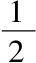
的幂为公比的几何级数，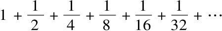
连续到“无穷”．读者知道有限项几何级数的和：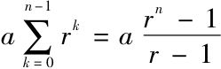
．此公式中，n可以为任意有限项，令a=1，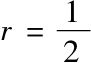
，有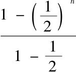
，数学家们从直觉上推断，当n达到无穷时，表达式中分子项的极限为1，因为当n达到无穷时，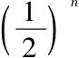
达到0，但是“n达到无穷”究竟是什么意思？这是自古希腊数学家、哲学家芝诺（逝世于公元前425年）时代以来，令数学家、哲学家们倍感困惑的问题．魏尔斯特拉斯的ε方法解决了这一问题：n不必达到无穷，而是对趋于无穷过程中的n定义极限．魏尔斯特拉斯定义了无穷序列的极限，对任意的ε，可以找到整数n，使得对于所有整数m≥n，序列的第m项总是在限ε内．不难将ε方法应用到当n趋于无穷时
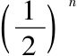
的极限为0的证明中来．对于任意的ε，找到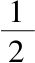
的幂，使其小于ε，显然所有更大的幂均小于ε．ε方法在函数理论方面产生很大影响，比较19世纪中期，数学家们的注意力集中于像正弦波这样的函数，这类函数的图像可以（至少部分地）用笔不离纸地（至多偶尔离开）画出．这是连续的几何直观．
ε方法使数学家们免于以上述几何方式考虑连续．魏尔斯特拉斯定义在点x0处连续的函数f如下：
如果对于每一个ε，能够找到一个δ（希腊字母），使得对于所有满足x0-δxx0-ε的x的值，均有
|f（x）-f（x0）|ε成立［也就是说f（x）与f（x0）之间的差小于ε］．
这个定义符合直观解释，在一点附近画出一个连续函数，则一定在此点处接近函数的值，但这一点可以做得更好．
在19世纪早期，德国数学家古斯塔·狄利克雷（Gustav Dirichlet）定义了两个奇异函数．第一个函数χx称作实数域内有理特征函数，具有下列值：
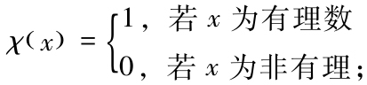
第二个函数D（x）更加奇异，称作狄利克雷函数，具有下列值：
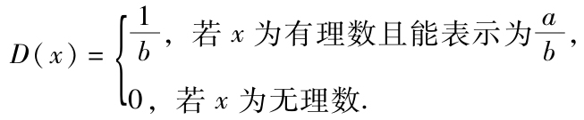
这两个函数均不能像正弦曲线那样被画出．因为第一类函数在每一点处都不连续（取ε1，在附近总会有一点的值不等于1，因为有理数和无理数处处相混合）．
并非所有数学家都认识这类奇异函数的价值．20世纪早期伟大的法国数学家亨利·庞加莱（Henri Poincáre）就抱怨过这类函数：
1861年，首次总结出ε方法的两年内，魏尔斯特拉斯证明了狄利克雷函数D（x）在x任意无理值处连续．当x=
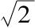
，运用ε-δ方法，令ε=0.1；即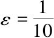
．我们知道D（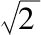
）=0，那么δ取何值，当x落在以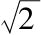
为中心的δ区间内时，选择不等于0.0的ε，能使D（x）所有的值不超过0.1？一旦意识到仅有那些分母不大于10的有理数才能够使D（x） 0.1（我们选取的ε），那么证明将很直接．
0.1（我们选取的ε），那么证明将很直接．
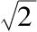
附近所有的有理数能够被列出并能确定离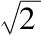
最近的一个（有理数）．我们可以借助于表格来说明．下面这张值表，显示了对于所有介于1.0至2.0的分母不超过10的有理数，相应的D（x）的值．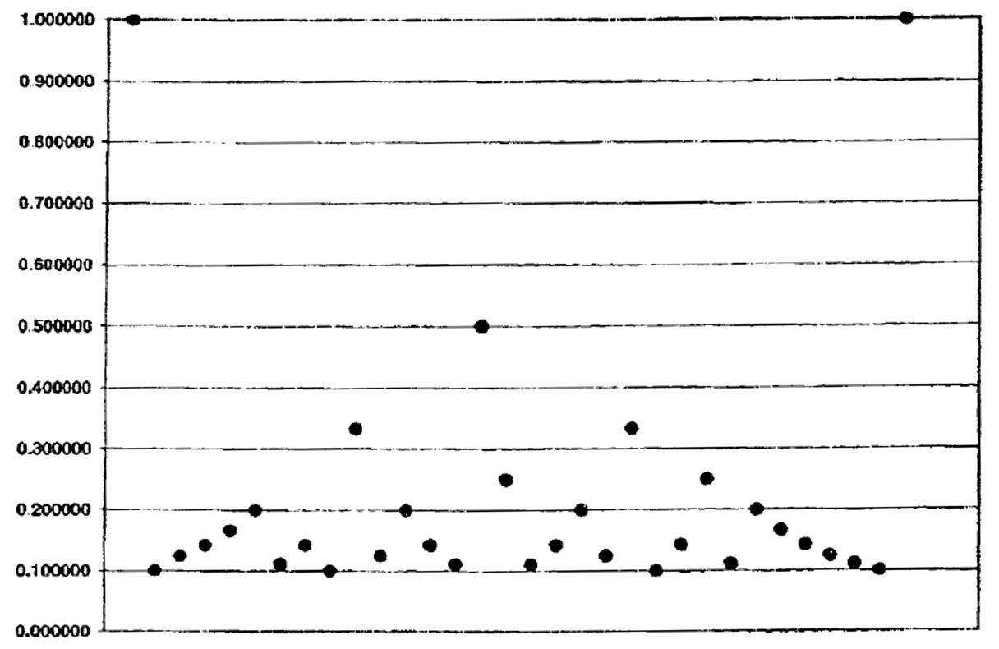
结果表明，使D（x）接近0的有理数是x=1.30或
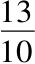
．柏林初期大量的数学工作令魏尔斯特拉斯很疲劳．1859年至1861年间的奠基性研究不久后，他患上了所谓“脑痉挛”．最终，他不得不休假一年．1863年当他重返教学时，总是坐着讲课，高年级的学生将教学内容抄在黑板上．
8年之后，他最终得到了柏林大学的固定职位．由于一直追求完善，魏尔斯特拉斯直到19世纪80年代中期才发表他的ε方法．德国最好的一代学生齐聚柏林大学跟随魏尔斯特拉斯学习数学，而且直接学习ε方法．
乔治·康托尔（Georg Cantor），本书后面将介绍其工作，算得上魏尔斯特拉斯所有学生中最著名的一位．康托尔的工作也成为魏尔斯特拉斯与其好友利奥波德·克罗内克（Leopold Kronecker）之间产生矛盾的原因，克罗内克有句名言：“上帝创造了整数，其余是人类的工作”，这句话被本书用作标题．克罗内克可以容忍所有类型的数：有理数、实数，甚至虚数．但是他不能容忍无穷，而那正是康托尔工作的核心．克罗内克认为康托尔的无穷数学对象不可能存在，他的工作毫无意义也毫无用处．
撇开数学不谈，魏尔斯特拉斯的晚年生活并不舒心．同许多数学家一样，魏尔斯特拉斯终生未婚，其弟妹也都未婚．魏尔斯特拉斯晚年坐了3年的轮椅，生活不能自理．1897年初，他在81岁生日过后的几个月，逝世于柏林．
伟大的法国数学家庞加莱，早年曾抱怨人们对诸如狄利克雷函数之类古怪的数学对象过于热衷，他却给予魏尔斯特拉斯高度评价，认为除了不可比拟的高斯与不可估量的黎曼，魏尔斯特拉斯是德国19世纪第三位伟大的数学家．